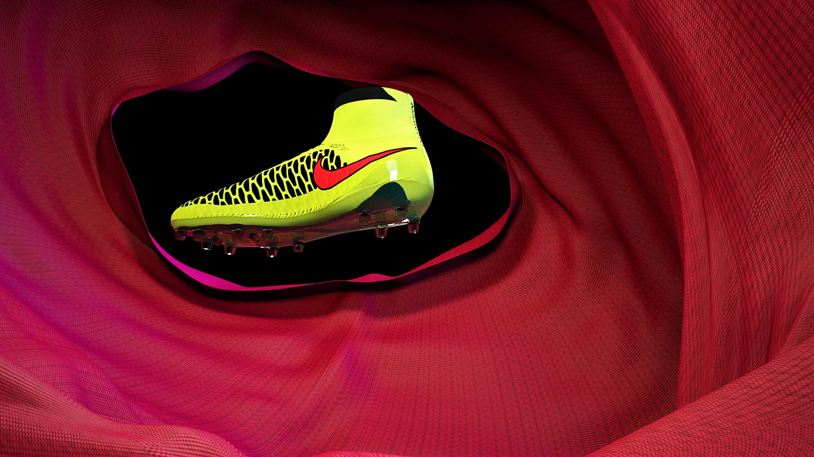
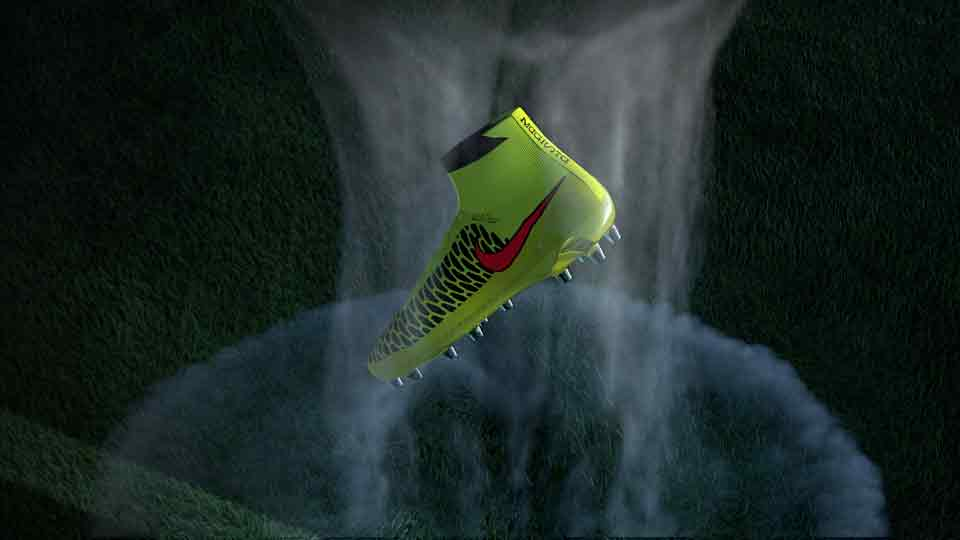
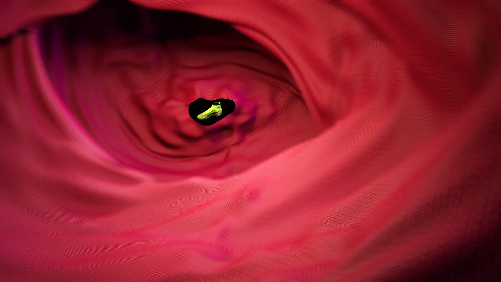
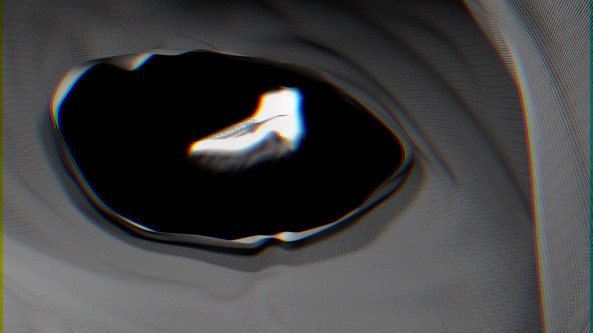
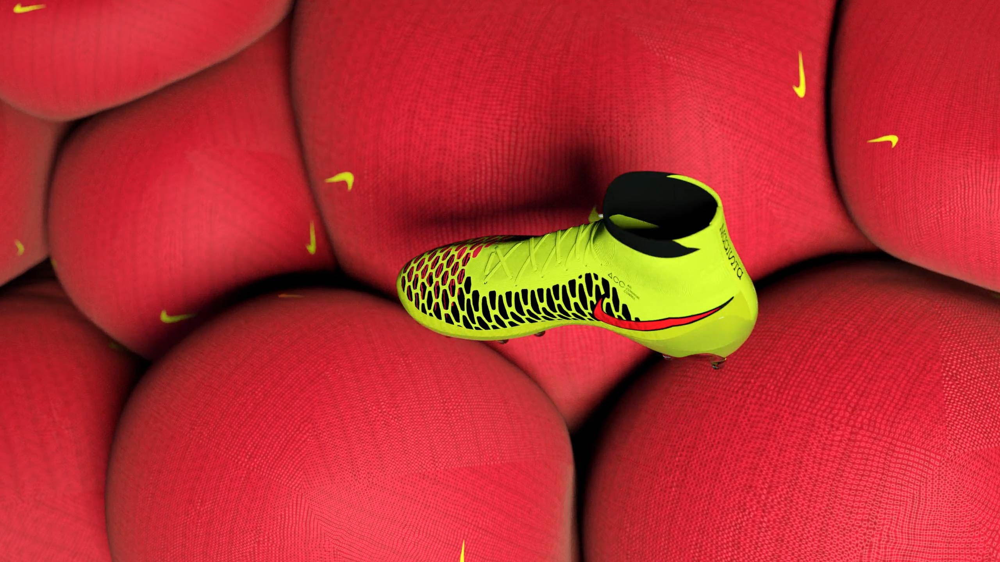
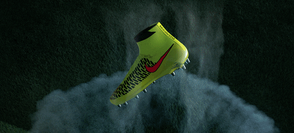

Nike : Mecurial Boot Campaign
Director / Concept / Design & Animation
We were selected to play in our favoured role in Nike's impressive World Cup 2014 line-up, tasked with the design, direction and vfx on the launch campaign for the revolutionary high-top Mercurial Superfly X boot.
The campaign plays on the speed and strength of the product as a result of it’s engineered Flyknit construction. Quickly amassing over 5.5 million views on Youtube, the product launch film became Nike’s most successful to date.





